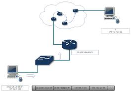

계층적으로 이루진 프토로콜은 송신측에서 하위 Layer가 상위 Layer를 등에 태우고 자신의 목적지로 보내게된다. ( 링크 계층은 데이터 그램을 다음 노드로 , 네트워크 계층은 세그먼트를 목적지 호스트로 , 트랜스포트 계층은 메세지를 서버 어플리케이션으로 보냄)
유심히 보면 각 계층의 패킷은 상위계층 패킷(메세지, 세그먼트, 데이터그램)과 헤더로 구성된다. 일반적으로 상위계층 패킷을 페이로드라고 부르게 된다. 즉 하위 계층의 패킷은 페이로드 필드(payload field) 과 헤더 필드 로 이루어진다.
네트워크로 연결된 어플리케이션 간에 데이터를 주고받기 위한 프로토콜이다. 어플리케이션 계층에서의 정보를 메세지(message)라고 부른다.
대표적인 프로토콜은 다음과 같다. SMTP(25), TELNET(23), FTP(20,21(제어))
클라이언트와 서버 어플리케이션 간에 어플리케이션 계층의 메세지를 전송하는 서비스를 제공하는 프로토콜이다. TCP와 UDP라는 전송 프로토콜이 있으며 이들은 어플리케이션 계층 메세지를 전달한다. 트랜스포트 계층의 정보를 세그먼트 라고 한다.
세그먼트 는 가장 간단한 경우에 어플리케이션 계층의 메세지 + 트랜스포트 계층 헤더 정보를 갖게 된다. 세그먼트에는 기본적으로 수신측 어플리케이션 정보(포트)와 오류 검출 비트를 포함한다. 트랜스포트 계층은 어플리케이션 계층의 메세지를 포함하고 있지만 메세지를 잘게 조각낼 수 있기 때문에 실제로 여러개의 세그먼트가 생성 될 수 있다. 여러개로 분할된다면 수신측에서 세그먼트롤 다시 조립해야 한다.
TCP 프로토콜은 어플리케이션에게 연결지향형 서비스를 제공한다. 또한 목적지로의 어플리케이션 계층 메세지 전달 보장과 흐름제어(송신자/수신자의 속도 일치)를 포함한다. 또한 TCP는 긴 메세지를 짦은 메세지로 나누고 혼잡제어 기능을 제공하며 네트워크가 혼잡할때 출발지의 전송속도를 줄이도록 한다.
UDP 프로토콜은 어플리케이션에 비연결형 서비스를 제공한다. 이 서비스는 신뢰성, 흐름제어, 혼잡제어를 제공하지 않는 아주 간단한 서비스이다.
인터넷의 네트워크 계층은 한 호스트에서 다른 호스트로 데이터그램을 라우팅하는 책임을 진다. 네트워크 계층은 IP프로토콜과 라우팅 프로토콜을 모두 가지고 있지만 IP가 인터넷을 묶는 역할을 하므로 흔히 IP계층 이라 부른다.
데이터그램은 목적지 호스트 주소를 헤더와 트랜스포트 계층에서 내려온 세그먼트를 포함한다.
메일 서비스를 이용하기 위해 목적지 주소가 적힌 편지를 전달하는 것처럼, 출발지 호스트에서 트랜스포트 계층 은 세그먼트와 목적지 주소를 네트워크 계층으로 전달한다. 이후 네트워크 계층은 목적지 호스트의 트랜스포트 계층으로 세그먼트를 운반하는 서비스를 제공한다.
라우터나 호스트는 인터페이스(NIC)를 통해 데이터그램을 주고받는다. 즉 호스트가 데이터를 수신하기 위해 IP주소와 인터페이스를 연관시킨다. 이때 네트워크를 서브넷으로 관리한다. 서브넷이란 IP주소에 규칙을 부여할 수 있는 방식이다. 서브넷 표기는 255.1.1.0/24 와 같다. 왼쪽 24비트가 서브넷 주소라 불린다.
서브넷을 만들기 위해선 인터페이스로 이루어진 링크들을 그룹 지으면 된다.
인터넷 주소 할당 방식에 CIDR(Classless Interdomain Routing, 사이다)라는 것이 있다. 이는 서브넷 표기법과 같이 192.168.1.0/24 와 같다. 최상위 비트를 네트워크 접두사(prefix)라고 한다고 한다.(서브넷 주소 이기도 한 듯) 즉 라우팅될때 네트워크 접두사를 사용해 단순하게 라우팅할 수 있다.
CIDR이 채택되기 전에는 네트워크 접두사를 8,16,24로 분류했으며 이는 클래스 주소체계(class addressing)이라 불렸다. 각각 8,16,24는 A,B,C 클래스로 분류되었다.
브로드캐스팅 주소는 255.255.255.255이다. 같은 서브넷의 모든 호스트에게 전달된다. (서브넷 주소로 보낸 것과 같음, 이때 링크 계층의 브로드캐스팅이 사용됨)
패킷이 목적에 도달하기위해 네트워크 경로(Path)에서 여러개의 데이터 링크 계층 프로토콜을 지나가게 된다. 어떤 링크계층은 4000bytes를 처리할수 있으며 어떤 링크계층은 1500bytes를 처리할 수 있을 것이다. 즉 MTU(maximum transmission unit)이 다를 수 있다. 네트워크 계층의 데이터그램은 한 라우터에서 다른 라우터로 전송되기 위해 링크 계층 패킷으로 캡슐화 되므로 MTU는 데이터그램의 길이에 강한 제약 을 둔다. 즉 데이터그램을 조각낸다. 이를 단편화 라고 한다.
기본적으로 IP계층은 네트워크 계층에서(TCP, UDP) 단편화가 일어나지 않는 것을 예상하고 있다. (상위 계층에서 단편화를 신경쓰지 않도록) 어쨌든 네트워크 계층의 단편화는 데이터 링크 계층의 MTU를 고려하여 이루어지게 된다. 예를들어 3980bytes의 세그먼트가 네트워크 계층에 도착했다면 1480 + 1480 + 1020로 Fragmentation(단편화) 된다. (일반적으로 LAN에서 사용되는 이더넷의 MTU는 1500 이므로 네트워크 계층 헤더(20bytes) + 페이로드(1480bytes))
단, 라우터에서 단편화된 데이터그램의 재결합이 발생하지 않는다. 그 이유는 라우팅이라는 더 중대한 일이 있기 때문이다. 결론적으로 라우터 단에서 단편화는 발생할 수 있으며 종단 호스트에서 재결합이 일어나게 된다.
이와 같이 IPv4 설계자는 단편화를 고려하여 IPv4를 설계하였다. 따라서 단편화를 위해 ID 필드, 오프셋 필드, 플래그 필드를 포함시켰다.
하지만 TCP 는 트랜스포트 계층에서 Segmentation 을 하기 때문에 UDP 만 네트워크 계층 Fragmentation 이 일어나게 된다.
Segmentation vs Fragmentation 을 읽어보자.
링크 계층은 데이터그램을 경로 상의 다음 노드로 전달 하는 서비스를 제공한다. 링크 계층에서 제공하는 서비스는 그 링크에서 채용된 특정 링크 계층 프로토콜 에 의해 결정된다. 예를들어 어떤 프로토콜은 목적지 노드까지 신뢰적 전송을 제공한다. 이 신뢰적 전송은 TCP와는 다르다. 링크 계층 패킷을 프레임이라고 한다.
링크 계층 프레임 은 데이터그램과 자신의 헤더정보를 포함한다.
근거리 통신망 LAN을 위해 개발된 링크 계층 프로토콜은 다음과 같다.
데이터그램이 출발지에서 목적지로 가는 데 여러 링크를 거치므로, 데이터그램은 경로상의 서로 다른 링크에서 다른 링크 계층에 의해 처리될 수 있다. (다양한 링크 프로토콜이 사용될 것임)
예를들면 하나의 링크에선 이더넷에 의해 다루어지고 다음 링크에서는 PPP에 의해 다루어질 수 있다. 즉 데이터그램은 서로 다른 링크 계층 프로토콜로부터 다른 서비스를 제공 받을 것이다.
인터넷의 네트워크 계층은 출발지와 목적지 간 일련의 패킷 스위치를 통해 데이터그램을 라우트한다. 경로상의 한 노드 에서 다른 노드로 패킷을 이동하기 위해, 네트워크 계층은 링크 계층 서비스에 의존해야한다.
각 노드에서 네트워크 계층은 데이터그램을 링크 계층으로 보내고 링크 계층은 그 데이터그램을 경로상의 다음 노드에 전달한다. 다음 노드에서 링크 계층은 그 데이터그램을 상위 네트워크 계층으로 보낸다.
데이터링크 계층의 주소는 위와 같이 다양한 이름으로 불리며 가장 널리 알려진 용어는 MAC 주소 이다. 대부분의 랜의 경우(이더넷, WIFI) MAC 주소는 6바이트 길이를 가지며 2^48개만큼의 사용 가능한 랜 주소가 있다.
실제 데이터 링크 계층의 주소를 가진 것은 호스트나 라우터가 아닌 호스트나 라우터의 어댑터(NIC) 이다. 즉 다수의 네트워크 인터페이스를 갖고 있는 호스트나 라우터는 여러개의 링크 계층 주소를 갖게된다.
네트워크 구조에서 계층이 독립적인 구성 요소가 되도록 하기 위해서 각 계층은 자신만의 이름을 가져야 한다. 당연한 말이지만 데이터 링크계층은 네트워크 계층 뿐만 아니라 다른 프로토콜도 지원하기위해 설계되었다. 따라서 데이터 링크 계층에서 IP주소를 갖게 되면 다른 프로토콜을 지원할 수 없다.
특이한 점은 링크 계층 스위치는 호스트나 라우터를 연결해주는 인터페이스에 링크 주소를 할당받지 않는다. 그 이유는 링크 계층 스위치가 호스트와 라우터 간에 데이터그램을 전달하는 일을 하기 때문이다.
호스트나 라우터는 중간에 거쳐가는 스위치의 주소를 프레임에 명시하지 않는다.
네트워크의 지연은 통신 어플리케이션에 많은 영향을 주며 성능을 파악하는데 도움이 된다. 컴퓨터 네트워크를 이해하는데 중요한 부분중 하나이다.
패킷은 송신호스트에서 여러 노드를 거쳐 수신호스트에 도달한다. 이때 각 링크에서 지연이 발생할 수 있다. 대표적인 지연(delay)은 노드 처리 지연(processing delay), 큐잉 지연(queuing delay), 전송 지연(transmission delay), 전파 지연(propagation delay) 이 있다.
처리 지연은 라우터에 도착한 패킷을 어디에 보낼지 결정하는데 걸리는 시간을 뜻한다. 큐잉 지연은 큐에서 전송되기 직전까지 대기하는 시간을 뜻한다. 전송 지연은 다음 라우터까지의 링크의 전송률에 에 영향을 받는다. 패킷의 길이를 Lbits, 전송률을 Rbps 라고 했을때 L/R은 전송 지연이다.
전파 지연은 링크의 처음부터 다음 라우터까지 전파에 필요한 시간을 뜻한다. 이때 링크의 물리 매체에 의존하며 전파속도에 의존한다. (2*10^8m/s ~ 3*10^8m/s) 따라서 전파지연은 거리/속도로 구할 수 있다.
N-1개의 라우터가 있다고 할때 종단간(end-to-end) 지연은 N*(처리지연 + 전송지연 + 전파지연)이다. 간단하게 지연시간은 traceroute를 활용해서 확인할 수 있다. 이 툴은 송신자-라우터 간의 지연시간을 출력한다.
또한 Ping 도구를 사용하여 2지점 사이의 지연을 구할 수 있다. 이를 RTT(Round-trip delay) 라고 한다. RTT 위키
TCP/IP 위에서 동작하기 위해 호스트에게 IP를 할당하는 프로토콜이다. DHCP server discovery, DHCP server offer, DHCP request, DHCP ack 순으로 동작한다.